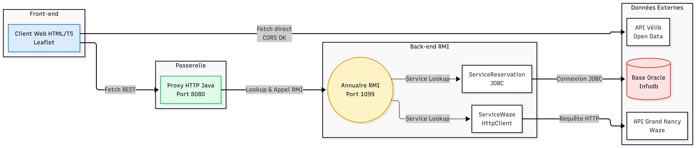
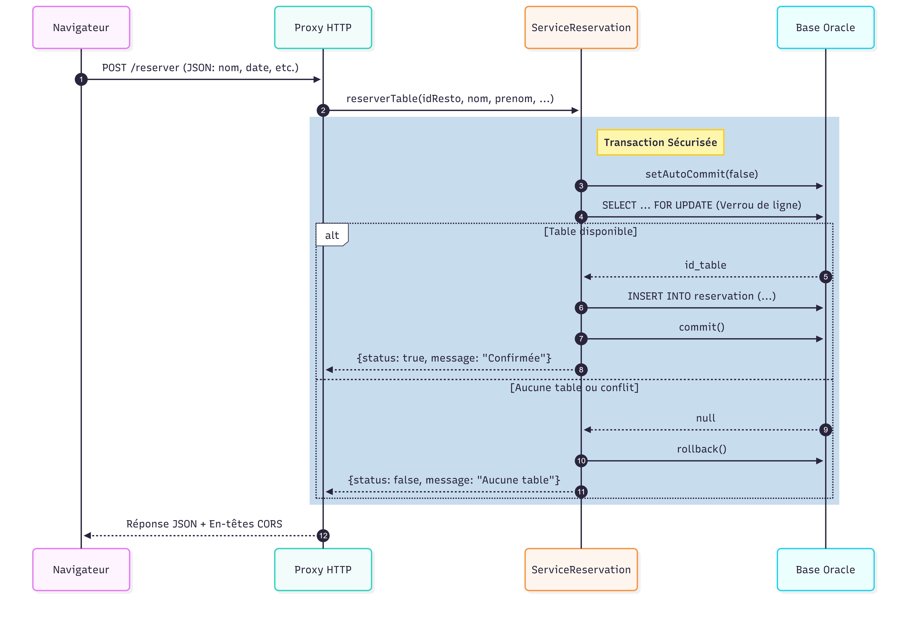
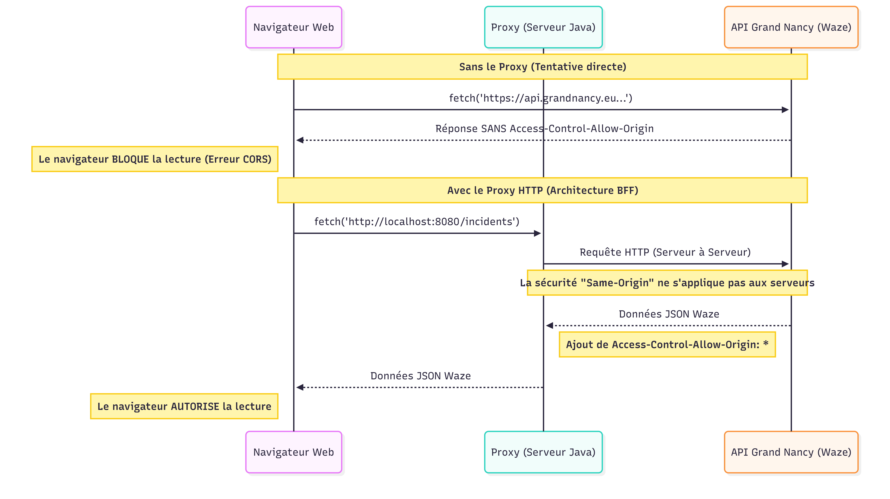

Architecture du projet
Contenu de la page :
- Schéma de l’architecture globale
- Rôle et fonctionnement des composants
- Gestion du Proxy HTTP
- Fonctionnement du serveur RMI
- Problématique CORS et solution BFF
1. Schéma de l'architecture globale
L'architecture repose sur trois blocs principaux : le client web, le proxy HTTP et le serveur RMI. Le client interagit avec la carte Leaflet et communique avec le proxy pour accéder aux données nécessitant un traitement serveur.

2. Rôle et fonctionnement des composants
A. Le client Web (Front-end)
Le client est développé en HTML/CSS et TypeScript et est packagé avec l'outil de build esbuild. Son rôle principal est d'afficher une carte interactive grâce à la bibliothèque Leaflet et d'interroger les différentes sources de données :
- Données ouvertes accessibles (Vélib) : Le navigateur fait un fetch direct vers l'API OpenData des vélos. Ces données ont des en-têtes CORS permissifs, le navigateur autorise donc la requête.
- Données bloquées et privées : Pour récupérer les incidents de circulation Waze et la liste des restaurants, le navigateur interroge notre propre Proxy HTTP via des requêtes fetch.
Exemple : Requête du client vers le proxy
// Fonction asynchrone pour récupérer les accidents Waze
export async function getAccidents() {
// Deux URLs possibles : accès direct et via proxy
const baseUrls = [DIRECT_URL, PROXY_URL];
// On essaie chaque URL l'une après l'autre
for (const baseUrl of baseUrls) {
try {
// Appel HTTP vers /incidents
const response = await fetch(baseUrl + "/incidents");
// Si la réponse est valide (status HTTP 200)
if (response.ok) {
// On récupère le JSON renvoyé par le serveur
const data = await response.json();
// Le serveur renvoie { status: true, message: "...json..." }
if (data.status) {
// Le champ "message" contient une chaîne JSON et on la parse
const waze = JSON.parse(data.message);
// On renvoie uniquement la liste des incidents
return { incidents: waze.incidents };
}
}
} catch (error) {
// Si l'appel échoue, on tente l'URL suivante
console.warn(`Échec avec ${baseUrl}, tentative avec l'URL suivante...`);
}
}
// Si aucune URL n'a fonctionné
console.error("Erreur : Impossible de récupérer les incidents (ni en direct, ni via proxy).");
return null;
}
Carte des Vélib :
À l'ouverture de la page, la carte affiche par défaut les stations de vélos de Nancy.
Grâce au menu de navigation situé sur la droite de l'écran, il est possible de sélectionner les différentes villes utilisant le réseau JCDecaux.
L'implémentation est facilitée par le fait que toutes ces villes sont gérées par la même entreprise : les API (nom des stations et statut des stations) possèdent donc la même structure et les mêmes interfaces. Il suffit simplement de modifier le nom de la ville dans l'URL pour récupérer les données correspondantes.
Chaque clic sur une ville déclenche un addEventListener. Celui-ci exécute plusieurs actions :
- suppression des marqueurs existants via clearMap() (map.mts)
- recentrage de la carte sur la nouvelle ville avec centerMap(lat, lon) (map.mts)
- appel de loadVille(ville: VILLES) (velomap.ts) pour télécharger les stations de cette ville
Le composant CityCards applique une fonction map() sur l'ensemble des villes afin de générer dynamiquement le HTML correspondant, puis rassemble toutes ces cartes dans une liste unique.
Carte des restaurants :
À l'ouverture de la page, le script restaurantmap.ts effectue un appel asynchrone vers getRestaurants() pour récupérer l'ensemble des établissements. Une boucle itère ensuite sur ces données pour positionner les marqueurs sur la carte via la fonction addRestaurant(restau) (map.mts).
En parallèle, l'exécution de initSidebar() remplit dynamiquement le menu déroulant (#restoSelect) avec le nom des restaurants et initialise l'affichage en chargeant l'historique complet des réservations via afficherReservations(-1).
Le panneau latéral (sidebar) intègre un bouton (#sidebar-toggle) qui intercepte les clics pour ajouter ou retirer la classe CSS open, modifiant au passage l'icône de direction (❮ ou ❯).
De plus, un écouteur d'événement change est greffé sur le menu déroulant des restaurants : chaque sélection déclenche une réévaluation des réservations en appelant afficherReservations(idResto) afin de filtrer dynamiquement la liste HTML (#listeReservation).
L'interaction avec la carte permet d'ouvrir une boîte de dialogue de réservation. Le clic sur le bouton "Réserver" intégré au popup Leaflet appelle openReservation(), ce qui retire la classe hidden du composant #reservationModal et met à jour son titre. Lors de la validation, l'écouteur du bouton #confirmRes exécute submitReservation(), rassemble les valeurs des champs de saisie (nom, prénom, convives, éléphone, date) et invoque la fonction distante reserverTable() via une requête HTTP POST interceptée par notre Proxy.
Pour garantir la robustesse du front-end, les fonctions de l'API des restaurants (getRestaurants, reserverTable, getReservations) parcourent un tableau d'URLs contenant DIRECT_URL (localhost) et PROXY_URL (IP de l'IUT). Si la connexion directe échoue, le client bascule automatiquement sur l'URL suivante sans interrompre l'utilisateur.
À noter que si deux personnes réservent en même temps sur le site, la seconde ne sera pas bloquée : elle recevra simplement une autre table disponible, ou aucune si toutes les tables ont déjà été attribuées.
Carte des incidents :
Dès le chargement de la page, le fichier incidentmap.ts lance automatiquement la récupération des anomalies de circulation en appelant la fonction getAccidents(). Les données Waze reçues sous forme de tableau sont parcourues élément par élément afin de générer et d'afficher les alertes sur la carte Leaflet à l'aide de la fonction addIncident(incident) définie dans map.mts.
La fonction addIncident extrait les coordonnées géographiques à partir de la chaîne de caractères location.polyline en la découpant (split(" ")) pour obtenir la latitude et la longitude nécessaires à l'instanciation du marqueur Leaflet. Elle assemble ensuite un contenu HTML personnalisé pour le popup, combinant le type d'incident, la rue affectée, les détails fournis par Waze ainsi qu'une date de fin.
Tout comme pour l'API des restaurants, la fonction getAccidents() implémente une tolérance aux pannes en essayant successivement de joindre le proxy en local puis sur l'IP de l'IUT. Côté back-end, la route /incidents du ProxyHttp redirige l'appel vers le service RMI waze.
L'implémentation de ServiceWaze est résiliente : elle tente une requête HTTP directe vers l'API du Grand Nancy et, en cas d'échec ou de blocage, bascule sur une configuration réseau utilisant le proxy cache de l'IUT (www-cache:3128).
B. Le Proxy HTTP (Passerelle)
Développé en Java à l'aide de la classe native HttpServer, ce composant central écoute sur le port configurable passé en paramètre (ex: 8080). Il fait office de point d'entrée unique pour le client TypeScript, en traduisant les requêtes HTTP en invocations de méthodes distantes RMI. Au démarrage, la classe ProxyHttp accepte trois arguments en ligne de commande pour mapper dynamiquement les adresses IP des serveurs de réservation et Waze, offrant un déploiement flexible (en local ou sur les machines de l'IUT).
L'architecture du serveur repose sur l'instanciation de routes :
- Routes de consultation (GET /restaurants et /incidents) : ils interceptent les requêtes du navigateur, initialisent une liaison vers le registre RMI (port 1099) de la machine cible, effectuent un lookup pour récupérer l'interface distante appropriée(reservation ou waze) et invoquent la méthode recupererDonnees(). La chaîne JSON renvoyée par le service est immédiatement réémise dans le flux de sortie HTTP.
- Routes transactionnelles (POST /reserver et /reservations) : Contrairement aux requêtes de lecture, ces routes extraient le flux (getRequestBody()) envoyée par le front-end et le convertissent en chaîne UTF-8.
Un objet org.json.JSONObject parse ensuite pour extraire de manière typée les variables requises (comme les entiers idResto ou nbClients, les chaînes de texte, ou la date en LocalDateTime).
Ces paramètres alimentent l'appel RMI distant (reserverTable ou recupererReservations).
La gestion de la politique CORS (Cross-Origin Resource Sharing) est opérée au sein d'une méthode centralisée sendJson().
Pour chaque réponse émise, le proxy injecte explicitement dans l'en-tête HTTP (HTTP Headers) les autorisations d'accès nécessaires.
Le proxy déclare ainsi accepter toutes les provenances via Access-Control-Allow-Origin: *, définit les verbes HTTP valides (GET, POST, OPTIONS) et autorise le transport de métadonnées spécifiques via Access-Control-Allow-Headers: Content-Type.
Le proxy implémente aussi la gestion des requêtes de pré-vérification ou Preflight Requests (OPTIONS).
Lorsqu'un navigateur s'apprête à envoyer une requête complexe (comme un POST contenant du JSON) vers un domaine tiers, il émet d'abord une requête automatique avec la méthode OPTIONS pour s'assurer que le serveur accepte la transaction.
Les contextes /reserver et /reservations interceptent ce cas de figure et renvoient immédiatement une réponse vide (status code 200) munie des en-têtes CORS. Cela donne le feu vert au navigateur pour acheminer la véritable requête POST contenant les données du formulaire de réservation.
Exemple : Redirection de la requête HTTP vers le service RMI
// Route pour incidents
server.createContext("/incidents", (HttpExchange exchange) -> {
String json;
try {
// Connexion à l'annuaire RMI pour récupérer le service waze
Registry reg = LocateRegistry.getRegistry(rmiHostWaze, 1099);
ServiceWazeInterface waze = (ServiceWazeInterface) reg.lookup("waze");
// Appel de la méthode distante
json = waze.recupererDonnees();
} catch (Exception e) {
json = "{\"status\":false,\"message\":\"Erreur RMI waze : " + e.getMessage() + "\"}";
System.err.println("Erreur /incidents : " + e.getMessage());
}
// Envoi de la réponse avec les en-têtes CORS
sendJson(exchange, json);
});
C. Le Serveur RMI (Back-end)
Ce composant constitue le socle métier et la couche d'accès aux données de l'application.
Il est découpé en plusieurs micro-services distribués. Les classes de démarrage dédiées
(LancerServiceReservation et LancerServiceWaze) initialisent ou
récupèrent un annuaire RMI (Registry) localisé sur le port 1099, puis y inscrivent leurs
objets distants respectifs.
Le Service Waze (ServiceWaze) :
Ce service implémente l'interface ServiceWazeInterface et agit comme un client de l'API Open Data du Grand Nancy. Il exploite les classes natives de Java 11+ (java.net.http.HttpClient, HttpRequest, HttpResponse) pour former sa requête HTTP GET vers le flux JSON cible.
Le Service de Réservation (ServiceReservation) :
Il s'appuie sur le driver JDBC Oracle pour dialoguer avec la base de données infodb
hébergée sur le serveur Charlemagne. Il gère un cycle de vie complet de la donnée :
-
Initialisation (Constructeur) : Lors du lancement, le service charge dynamiquement un
fichier
export.geojson, parse son contenu, supprime les anciennes tables de la base (Drop/Cascade constraints) et génère une base de données (Tablesrestaurant,table_restau,reservation) via des requêtesexecuteBatch(). -
Consultation (
recupererDonnees/recupererReservations) : Exécute des requêtes SQLSELECTet de jointure (JOIN table_restau) classiques, parcourt le curseur (ResultSet) et convertit les données relationnelles (nom, adresse, latitude/longitude, dates formatées avecTO_CHAR) en tableaux JSON (JSONArray) pour le Front-end. -
Transaction sécurisée (
reserverTable) : C'est ici qu'intervient la gestion de la concurrence. Pour éviter que deux utilisateurs ne réservent la même table à la même seconde, la méthode désactive la validation automatique (connection.setAutoCommit(false)).

La requête de vérification des disponibilités intègre la clause SQL FOR UPDATE :
ce verrou garantit que la table trouvée est bloquée pour les autres threads pendant toute
la durée du traitement. Si une table possédant une capacité (capacite >= nbClients)
et aucune réservation chevauchante (NOT EXISTS) est détectée, une insertion (INSERT INTO reservation) est déclenchée puis validée définitivement par un connection.commit(). Dans le cas contraire, un connection.rollback() annule l'opération en base, évitant tout état corrompu.
D. Les Sources de Données externes
Base de données Oracle : Hébergée sur les serveurs de l'IUT, elle contient les informations privées de l'application.
API Open Data : Fournissent les incidents en temps réel et la disponibilité des vélos.
3. Le problème des données bloquées (CORS)
Lors de nos tests côté client, la récupération des données d'incidents Waze directement depuis le navigateur échouait à cause d'une erreur de sécurité soulevée dans la console (F12).
Le problème : L'API du Grand Nancy ne renvoie pas l'en-tête Access-Control-Allow-Origin. Par mesure de sécurité, le navigateur web bloque donc la lecture de la réponse.
La solution : Nous avons déporté cette requête côté serveur (dans notre ServiceWaze via le Proxy HTTP). Un programme Java n'est pas soumis à la politique Same-Origin et peut lire la réponse HTTP sans problème, avant de la renvoyer proprement au client.

Est-ce responsable de contourner ainsi la politique de sécurité du navigateur ?
Oui, c'est même une architecture standard appelée BFF (Backend For Frontend). La politique CORS existe pour empêcher un site web malveillant de faire des requêtes en cachette depuis le navigateur de l'utilisateur. En faisant la requête depuis notre serveur Java, nous assumons l'identité de l'appelant. Nous ne contournons pas la sécurité d'un utilisateur, nous agissons simplement en tant que client "serveur" légitime de l'API publique.
Exemple : Ajout des en-têtes CORS par le Proxy HTTP
// Envoie une réponse JSON avec les en-têtes CORS
private static void sendJson(HttpExchange exchange, String json) {
try {
// Ajout des en-têtes pour autoriser le navigateur à lire la réponse
exchange.getResponseHeaders().set("Access-Control-Allow-Origin", "*");
exchange.getResponseHeaders().set("Access-Control-Allow-Methods", "GET, POST, OPTIONS");
exchange.getResponseHeaders().set("Access-Control-Allow-Headers", "Content-Type");
exchange.getResponseHeaders().set("Content-Type", "application/json; charset=UTF-8");
...
} catch (IOException e) {
...
}
}